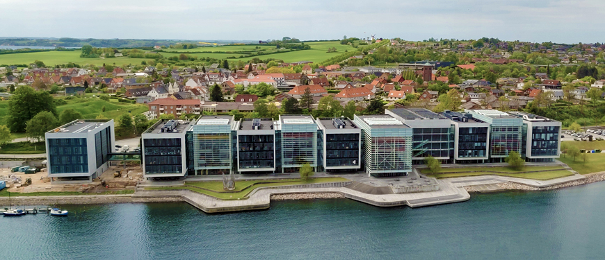
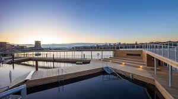

SDU Expands in Sønderborg
The University of Southern Denmark (SDU) is opening a new building next to
the Alsik Hotel. The new facility will support engineering programs and
innovation labs, strengthening the city's role as a technology hub.

Sønderborg Opens New Sauna
Sønderborg’s popular waterfront has
gained a new attraction this week as the
city officially opened its upgraded public sauna.
Located just a few steps from the fjord, the facility aims
to promote well-being, outdoor culture,
and the growing interest in winter bathing among both residents and visitors.
